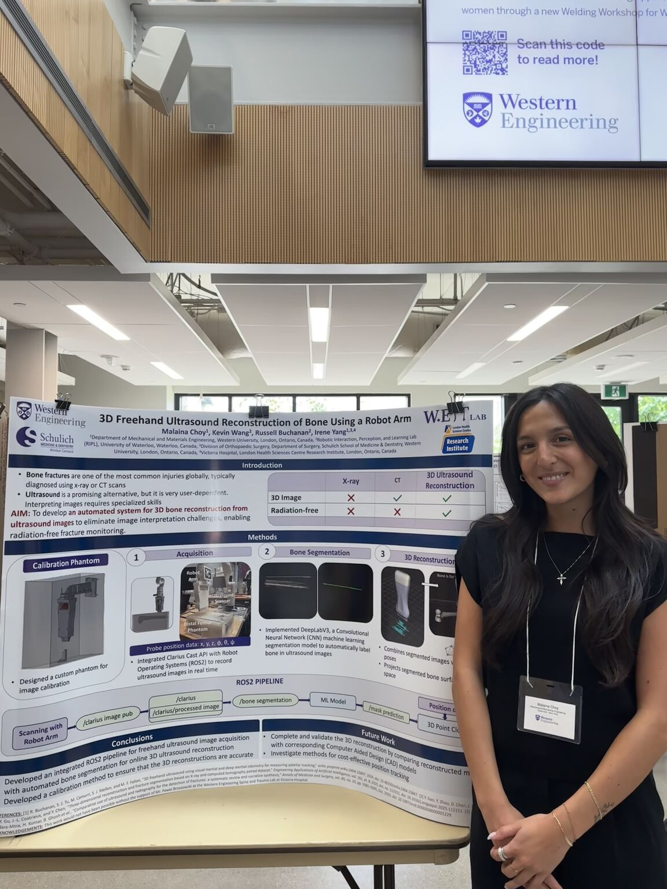
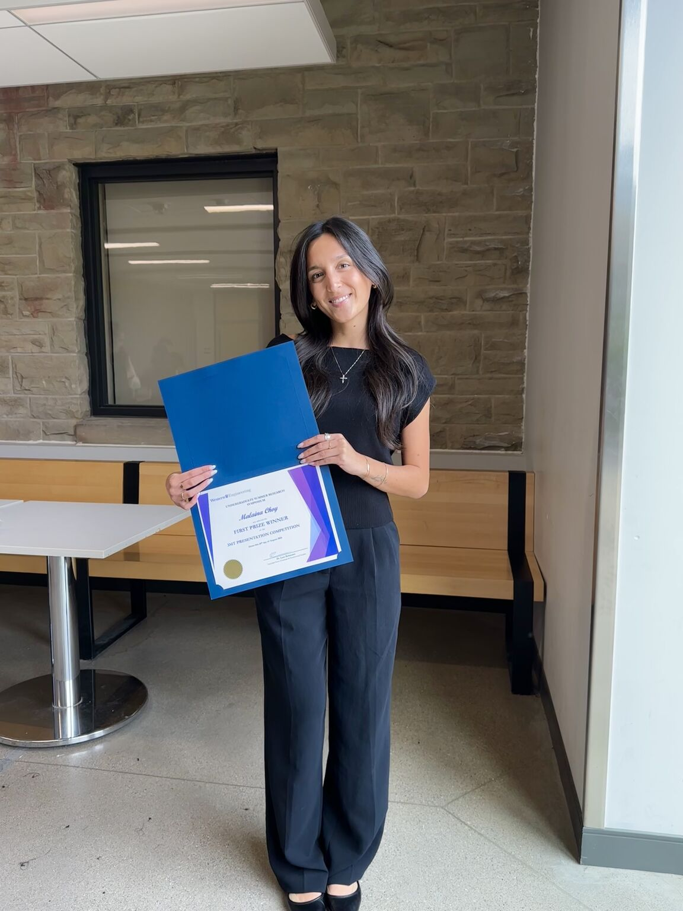

Biomedical Engineering · Current Research
Developing and validating an ultrasound-based system for 3D reconstruction of bone.
The Challenge
How can we reconstruct bone in 3D using ultrasound while accurately tracking how the scanner moves?
01 / The Clinical Problem
Bone assessment commonly relies on imaging modalities such as X-ray and CT. Ultrasound provides a radiation-free alternative, but creating a three-dimensional representation requires both identifying bone within the ultrasound images and determining where the scanner was positioned as those images were acquired.
02 / Project Goal
My work focuses on developing and validating a system for reconstructing three-dimensional bone geometry from freehand ultrasound. The project integrates ultrasound imaging, motion tracking, sensor data, robotic systems, and quantitative validation into a unified experimental workflow.
03 / System Development
The system combines multiple hardware and software components required to acquire ultrasound data, estimate scanner motion, identify bone, and reconstruct the resulting information in three-dimensional space.
Ultrasound Acquisition
→
Motion Tracking
→
Bone Segmentation
→
3D Reconstruction
→
04 / Experimental Validation
A major part of my work involves developing repeatable experiments to evaluate system performance against controlled reference measurements. This enables sources of error to be identified, quantified, and addressed through iterative system improvements.
Design repeatable experiments that isolate and evaluate system performance.
Compare measurements against robotic reference data to quantify tracking and reconstruction performance.
Investigate tracking, synchronization, sensor, and data-quality issues to improve system reliability.
05 / Biomedical Significance
Three-dimensional ultrasound has the potential to provide radiation-free information about bone geometry while using portable imaging technology. Developing reliable methods for reconstruction and motion tracking could support future applications in bone assessment and fracture monitoring.
06 / Engineering Skills
07 / Research Communication
Presented my work on 3D freehand ultrasound reconstruction at Western Engineering's Undergraduate Summer Research Symposium, communicating the technical development, experimental approach, and biomedical motivation of the project.


Research Recognition
Awarded First Place in Western Engineering's Undergraduate Summer Research Three Minute Thesis competition for presenting this research to a non-specialist audience in under three minutes using a single static slide.